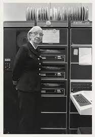

Ada Lovelace
a primeira programadora da história, uma vez que suas anotações foram observadas como sendo a primeira descrição de um software.
Grace Hopper
A criadora das primeiras linguagens computacionais “humanas”, que possibilitou a interpretação computacional de comando em inglês no lugar de apenas números e símbolos.
Hedy Lamarr
Inventou e patenteou um método de transmissão de sinais de rádio, o FHSS, a invenção contribuiu para o sistema de comunicações das forças armadas dos EUA e, posteriormente, para os telefones celulares e Wifi.
Radia Perlman
Incumbida para desenvolver um protocolo que permitisse que a internet obtivesse um alcance maior, sem utilizar maior quantidade de memória o Spanning Tree Protocol (SPT).